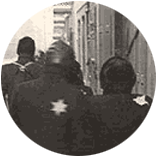

En 1940 se aisló a los judíos en el gueto de Lodz. Solo se podían comunicar con el resto de la ciudad cruzando el puente elevado para ir a trabajar para los alemanes a cambio de una mísera ración de comida.
Ana y su familia debieron abandonar su hogar y fueron encerrados en el gueto.
El puente de madera del gueto de Lodz.

Judíos con la estrella amarilla.
“Ahora me toca recortar y coser la insignia que debemos usar sobre nuestra ropa. Estoy observando la estrella de David, el símbolo de los judíos. La insignia de la gloria de un rey que honra la Biblia...
Esta es nuestra estrella, de paz y justicia! ¡No temas, aunque nos quieren inculcar que tú eres nuestra desgracia, para nosotros jamás lo serás!
Cuando terminé de coser todas las estrellas, un mar de lágrimas llenó mis ojos.
Mi madre lo notó y me preguntó si me pasaba algo. Le contesté que se me había nublado la vista de coser tantas estrellas, ya que somos unos cuantos los que tendremos que usarlas...”
“Mis pensamientos me abruman, pero la realidad es esta: el gueto, el hambre, la desesperación. A pesar de tantos sucesos y penurias me queda algo de optimismo. Cuando miro el sol, me parece tener más esperanza. En este abatimiento y este dolor en todos los instantes, no maldigo a la vida, al contrario la amo aún...”
“¡Por eso quiero vivir! Sobrevivir, para contar todo lo que he visto y sufrido. Soy tan joven, ¿qué mal he hecho? y ya me han humillado y ofendido, ¿por qué? ¿Solamente porque pertenezco al pueblo judío?”